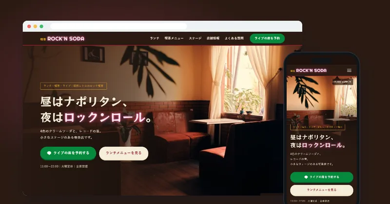
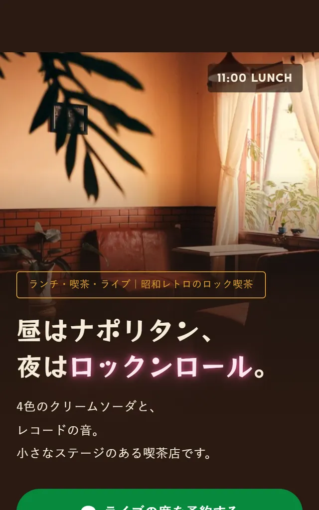
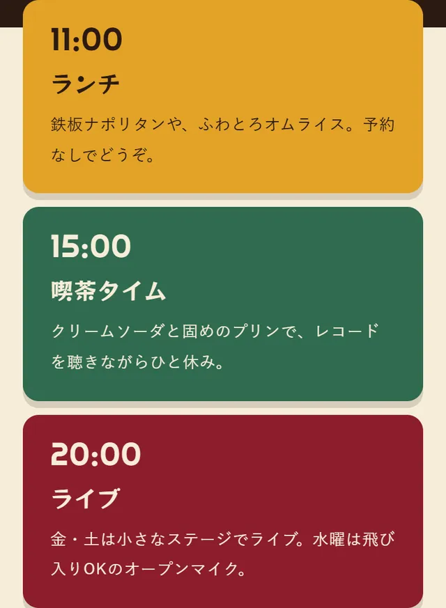
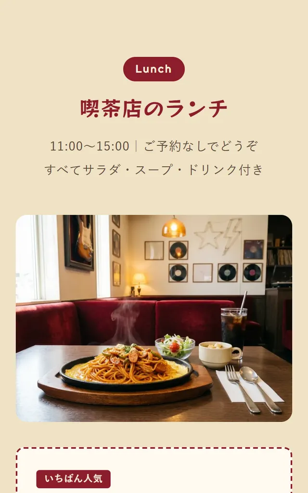
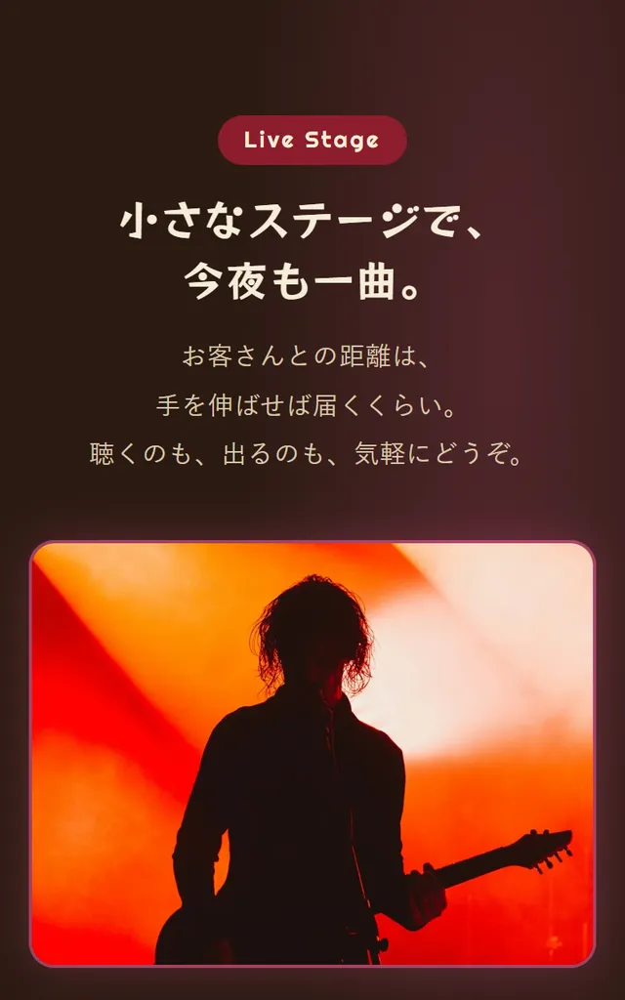
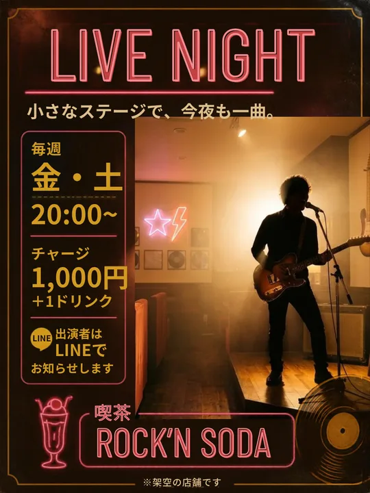
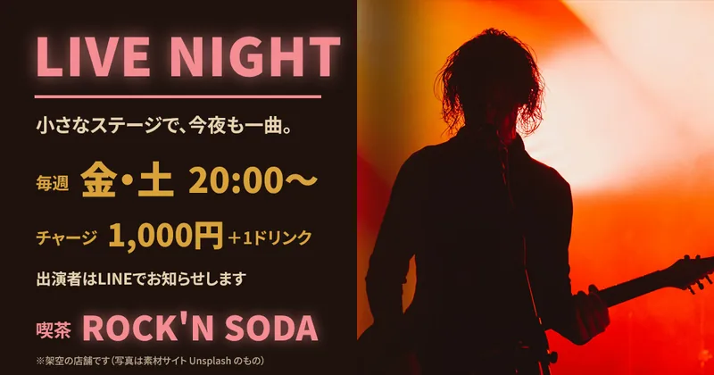

制作の解説｜LP・バナー・喫茶店
ロック喫茶「ROCK'N SODA」のLPとライブ告知バナー
昼はランチの喫茶店、夜は小さなステージのライブ。
ふたつの顔を持つお店を、1枚のページで見せました。

※自主制作の作品です（実在のお店とは関係ありません。メニュー・値段は仮の内容です）。LP・バナーとも、写真は素材サイト（Unsplash・Pixabay）のものを使っています。
完成したサイトを見るRequest
依頼内容
- 店名「ROCK」という言葉を使いたい
- 音楽店内にロックが流れていて、演奏できる小さなステージがある
- 雰囲気有名なロック系カフェのような高揚感と、昭和レトロの花柄グラス
- お客さん日本の人が入りやすい、レトロなカフェ
- 営業ランチもやっている
イメージの元になったお店やグラスは、実在のブランドです。名前・ロゴ・柄は使わず、「レコードとロックの音」「ネオンの光」「花の形の飾り」で雰囲気だけを取り入れました。
Thinking
考えたこと
-
昼と夜、ふたつの顔を1枚で見せる
ランチに来る人と、ライブに来る人では、知りたいことが違います。コピーを「昼はナポリタン、夜はロックンロール。」にして、ランチ・喫茶・ステージの情報をそれぞれまとめ、どちらの人も自分向けの情報がすぐ見つかるようにしました。
-
「ロック喫茶」として組み立てる
海外のカフェをそのまままねるのではなく、日本の人になじみのある昭和の純喫茶を土台にしました。赤い革張りのソファ、クリームソーダ、鉄板ナポリタンに、レコード、小さなステージ、ネオンの光を足しています。
-
素材写真を、ひとつのお店に見せる
写真は素材サイト（Unsplash・Pixabay）から、ロゴや商標、顔のわかる人物が写っていないものを選びました。撮影された場所が違う写真でも同じお店に見えるよう、色味を暖かい方向にそろえています。演奏する人は、顔がわからない逆光のシルエットの写真です。
-
音楽の著作権にも触れておく
お店でBGMを流したりライブをしたりするには、著作権の許諾（JASRACなど）が必要です。ページに注記を入れ、実際のご依頼ならお店に確認する項目として整理しました。
Design
ページで工夫したこと
スマホで見たときの画面です。
-

昼から夜へ切り替わるファーストビュー
昼の店内の写真から夜のステージの写真へ、「11:00 LUNCH」「20:00 LIVE」の時刻と一緒に切り替わります。見出しのネオンの文字は、ときどきまたたきます。
-

お店の1日を、時刻で見せる
ランチ・喫茶・ライブの時間帯を順番に並べ、いつ行けば何があるのかをひと目でわかるようにしました。
-

ランチは、写真と価格をすぐに
お昼休みに見る人のために、メニューと価格、付いてくるものを短くまとめました。
-

聴く人にも、出たい人にも
ライブの曜日・時間・チャージに加えて、「ステージに出てみたい方へ」として機材の貸し出しや申し込み方法をまとめました。
Promotion
ライブ告知バナーも、同じ色と言葉で
LPと同じ色・言葉で、SNSやLINEで使うバナーを作りました。


横長バナー（1200×630）LINEやXで共有したときの画像や、Webサイトのバナーに使える横長版です。縦長版と同じ内容を、横の画面に合わせてPhotoshopで組み直しました（どちらも文字はあとから直せるテキストレイヤーです）。
Check
確認したこと
- 3つの画面幅で表示を確認スマホ・タブレット・パソコンで、文字の折り返しやボタンの位置を確認しました。
- 写真の選び方商用利用できるライセンスか、ロゴ・商標・顔のわかる人物が写っていないかを、1枚ずつ確認しました。
- 動きと見やすさ写真の切り替えには一時停止ボタンをつけ、端末で「動きを減らす」設定にしている方には動かないようにしました。
- 実在ブランドを使わないイメージの元になったお店やグラスの名前・ロゴ・柄が、ページにもバナーにも入っていないことを確認しました。
Contact
ページもバナーも
まとめて相談したい方へ
「まだ何も決まっていない」段階でも、
大丈夫です。
ご相談・お見積りは無料です。